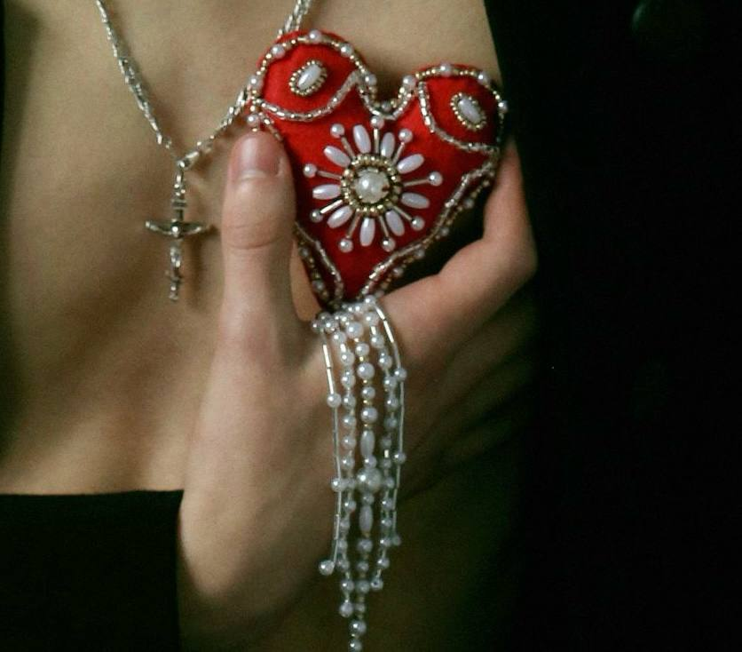
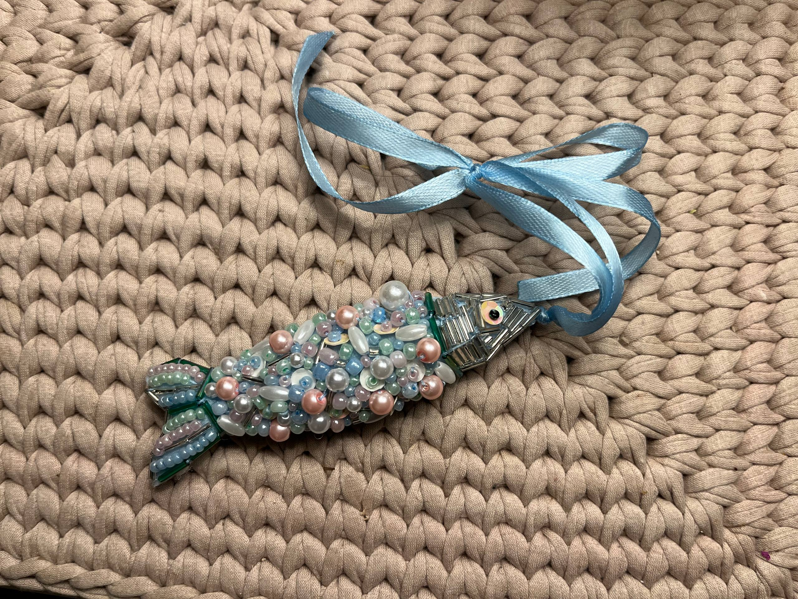
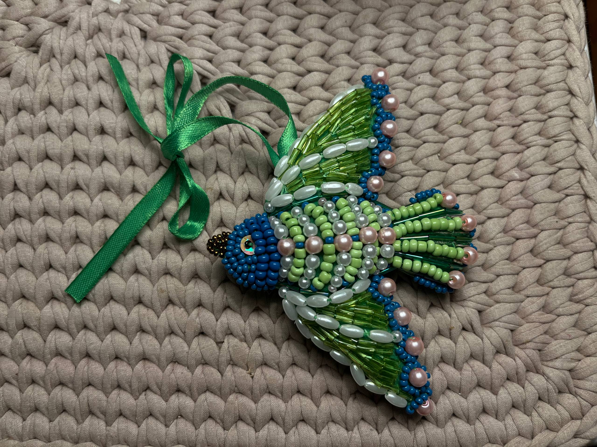
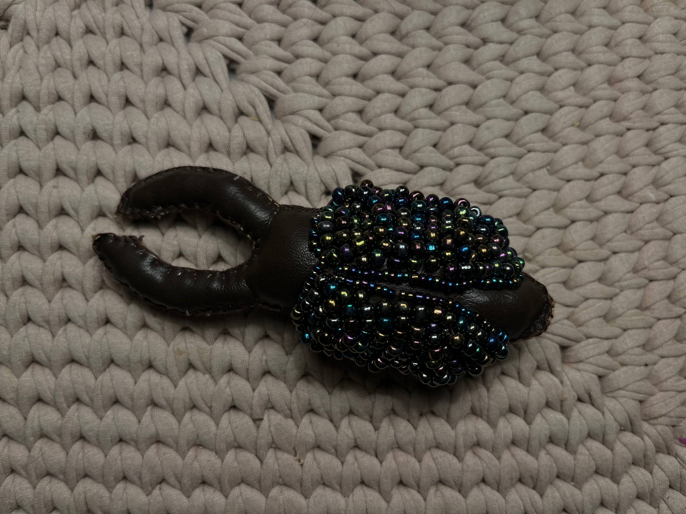
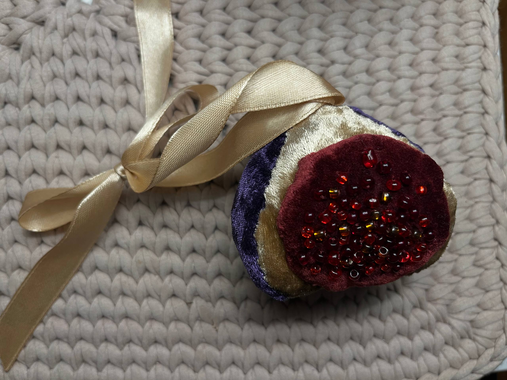

Сердце
Роковое настроение
МАЛЕНЬКАЯ МАСТЕРСКАЯ · БОЛЬШАЯ ЛЮБОВЬ К ДЕТАЛЯМ
Создаю необычных текстильных персонажей вручную — от выбора ткани до последнего стежка вышивки. Каждая игрушка получает свой характер и историю.
Смотреть коллекцию
Создано вручную, с вниманием к каждой детали.
МОЯ КОЛЛЕКЦИЯ
Пять маленьких историй, созданных из ткани и нитей.
Роковое настроение

Творение океана

Райское наслаждение

Экокожа для любителей интересного

Аппетитный бархат
О МАСТЕРСКОЙ
В основе моей работы — фетр. Он удобен в обработке, хорошо держит форму и позволяет создавать аккуратные детали. Также я использую мягкие ткани с бархатистой фактурой и экокожу, подбирая материал под характер каждого персонажа.
Особое место занимает ручная вышивка. На неё уходят многие часы: каждый стежок требует внимания и терпения. Именно такие детали делают игрушку выразительной, неповторимой и по-настоящему авторской.
ДАВАЙТЕ ЗНАКОМИТЬСЯ
Оставьте сообщение — буду рад обсудить идеи и игрушки.